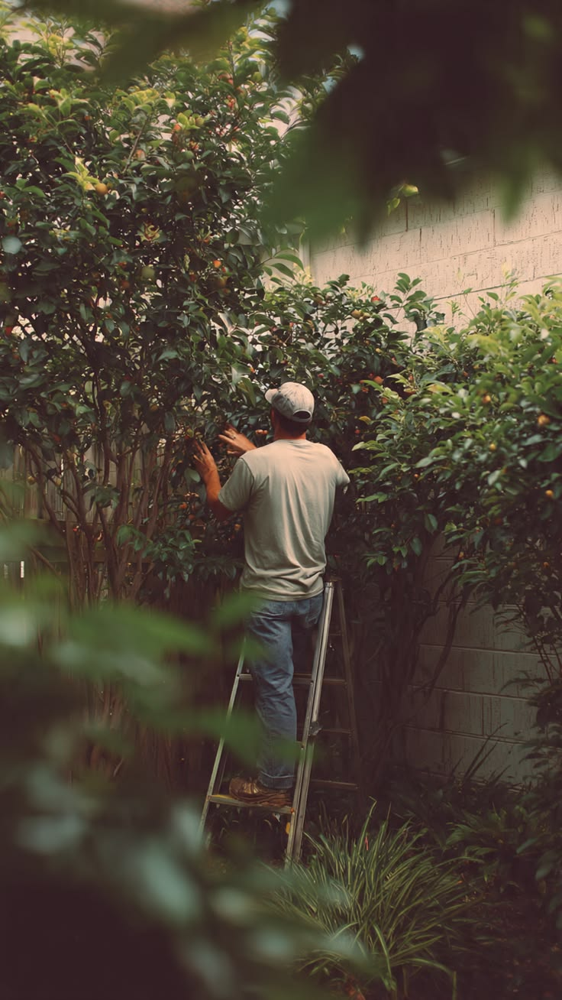
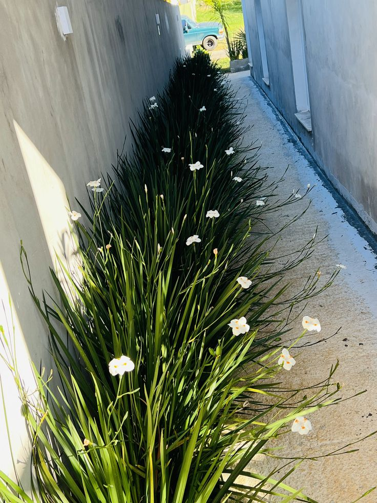
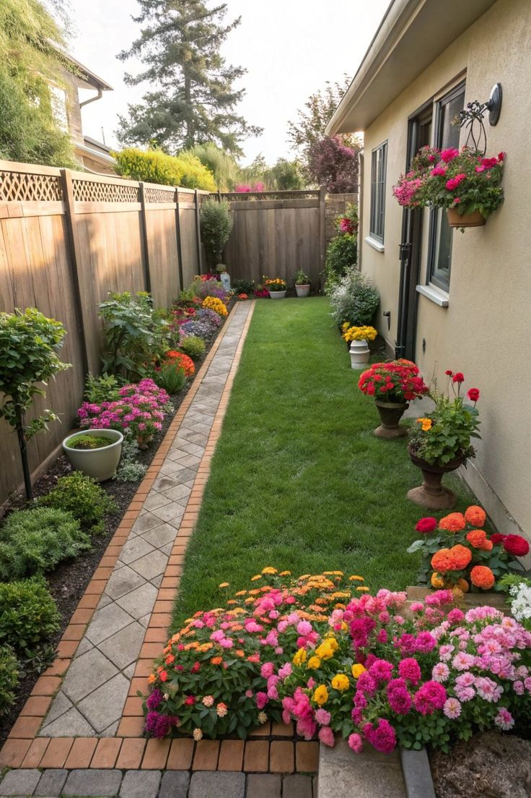

ARTE E FLORES PAISAGISMO
Manutenção de Jardins
Cuidado, organização e beleza para manter seu jardim sempre bem apresentado.
🌿 SOLICITAR ORÇAMENTONOSSOS CUIDADOS
Tudo o que seu jardim precisa.
Realizamos diferentes cuidados para manter seu jardim bonito, organizado e saudável.
Poda e formação
Controle do crescimento e manutenção do formato das plantas.
Cuidados com arbustos
Podas e cuidados para manter arbustos bonitos e bem organizados.
Limpeza do jardim
Retirada de folhas, galhos e resíduos, mantendo o espaço limpo e organizado.
Controle do mato
Limpeza das áreas verdes e controle da vegetação indesejada.
Cuidados com as plantas
Atenção às necessidades das plantas para preservar sua aparência.
Adubação
Aplicação de nutrientes de acordo com as necessidades das plantas.
Controle de pragas
Cuidados para prevenir e controlar problemas que prejudicam as plantas.
Áreas verdes
Conservação geral do espaço para manter o ambiente agradável e bem cuidado.
NOSSO TRABALHO NA PRÁTICA
Cuidado que transforma.
Confira alguns exemplos dos cuidados realizados para manter jardins bonitos e bem apresentados.



Um jardim bem cuidado
transforma todo o ambiente.
Conte com a Arte e Flores Paisagismo para cuidar do seu espaço.
FALE CONOSCO
Vamos cuidar do seu jardim?
Selecione os serviços que você precisa e solicite seu orçamento.